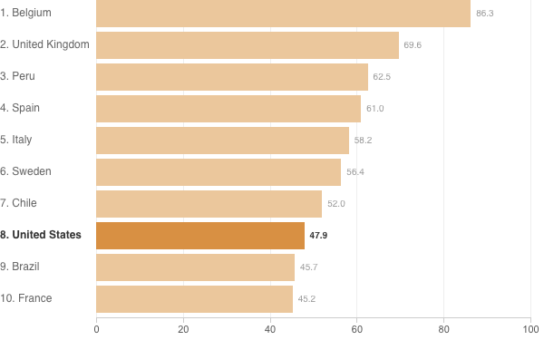

<%= await t.include("lib/_head.html") %>
<% if (COPY.labels.casefatality_headline) { %>
<%= t.smarty(COPY.labels.casefatality_headline) %>
<% } %>
<% if (COPY.labels.casefatality_subhed) { %>
<%= t.smarty(COPY.labels.casefatality_subhed) %>
<% } %>
aria-label="<%- COPY.labels.casefatality_screenreader %>"
<% } %>
>

<% if (COPY.labels.casefatality_footnote) { %>
<% } %>
<%= await t.include("lib/_foot.html") %>